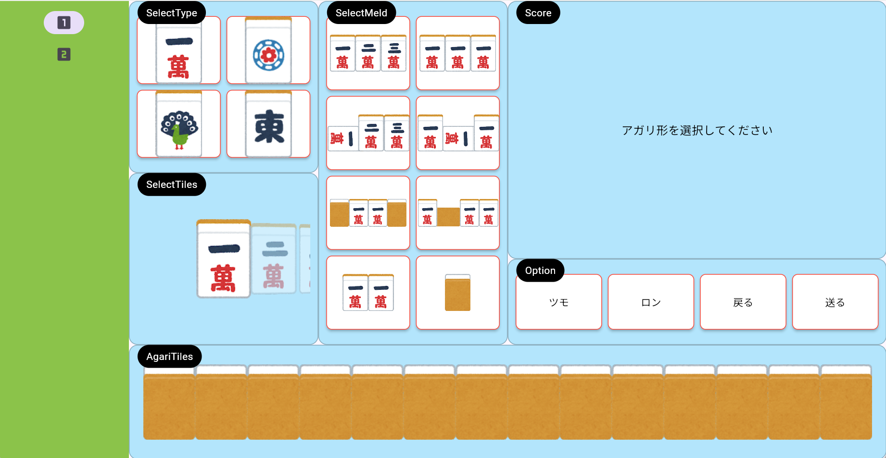
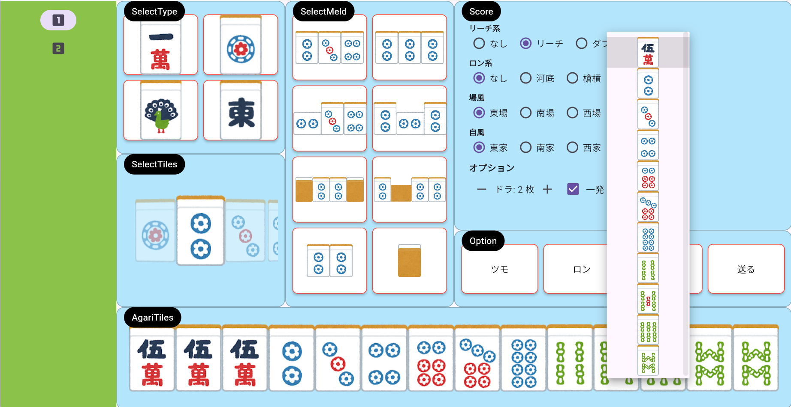
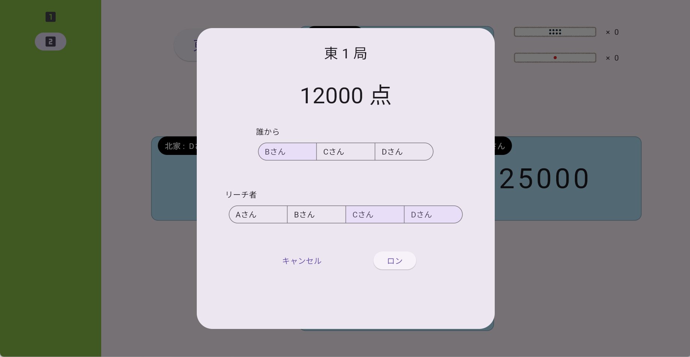
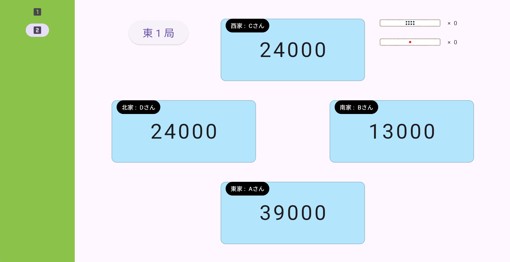
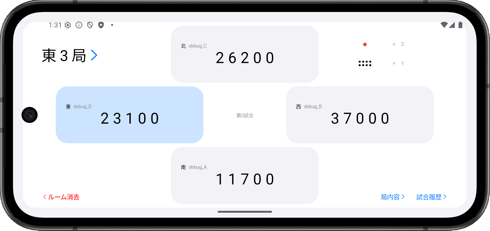

SOFTWARE

Dart / Flutter
友人と麻雀をする際、自前の全自動卓では点数共有ができないことに不便を感じたことから制作を始めた。UIで牌姿を選択し役や点数を計算する機能を実装している。
アプリ開発の学習を兼ねて機能を拡張したが、ソケット通信による共有機能を導入する段階で、設計を見直すことにした。
mahjong


左側の「SelectType」「SelectTiles」で牌種とブロックの起点を選択し、中央の「SelectMeld」にてブロックの形を選択。
下の「AgariTiles」を選択で埋め、右の「Score」でアガリの詳細を入力。「Option」の計算を押下すると牌姿から点数を計算。


計算した点数をもとに共有画面にて点数移動の入力。通信は未実装。
この時点で流局時の入力ができないことや、実践での使用を想定した際に入力数が多すぎることから、UI入力を廃止し点数共有に特化したアプリの再設計を始める。
NEXT
